01 — The Athlete
From athlete
to photographer.
I played four sports in high school — four years each in football and basketball, team captain in both, a two-year varsity starter. I lived the game before I ever picked up a camera. That's still my edge behind the lens: I'm not guessing what a moment means to the athlete living it. I know.
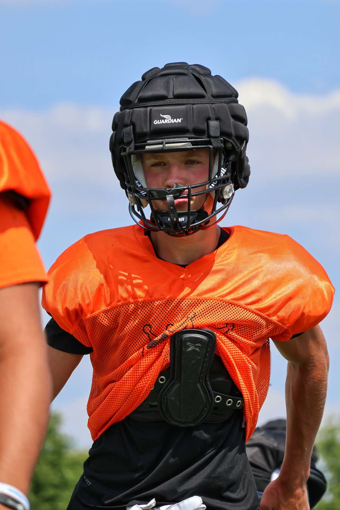
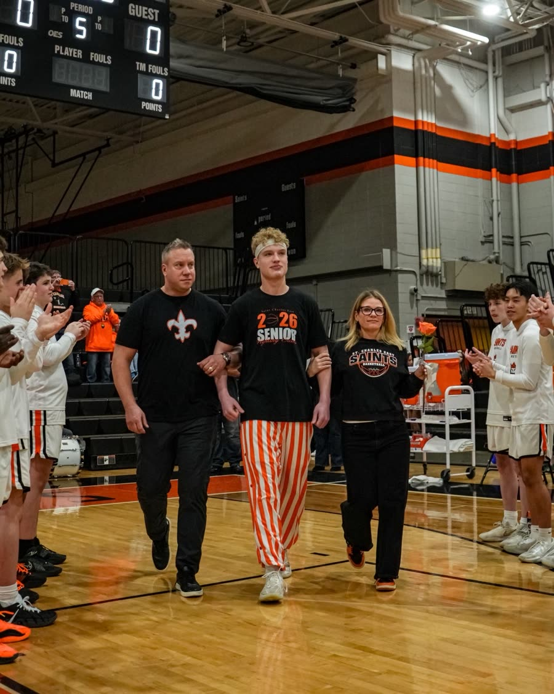
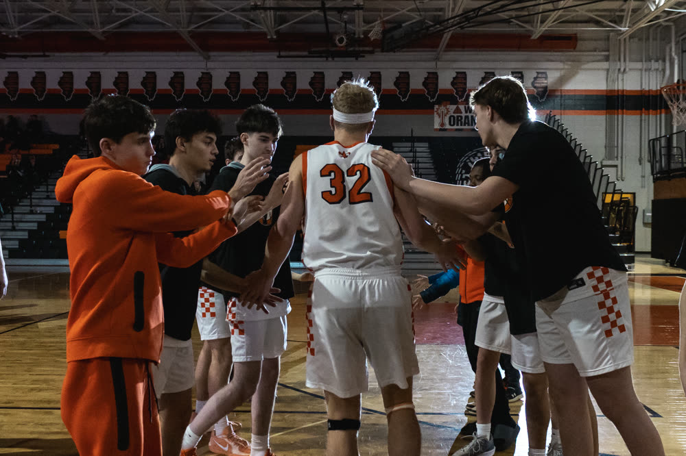
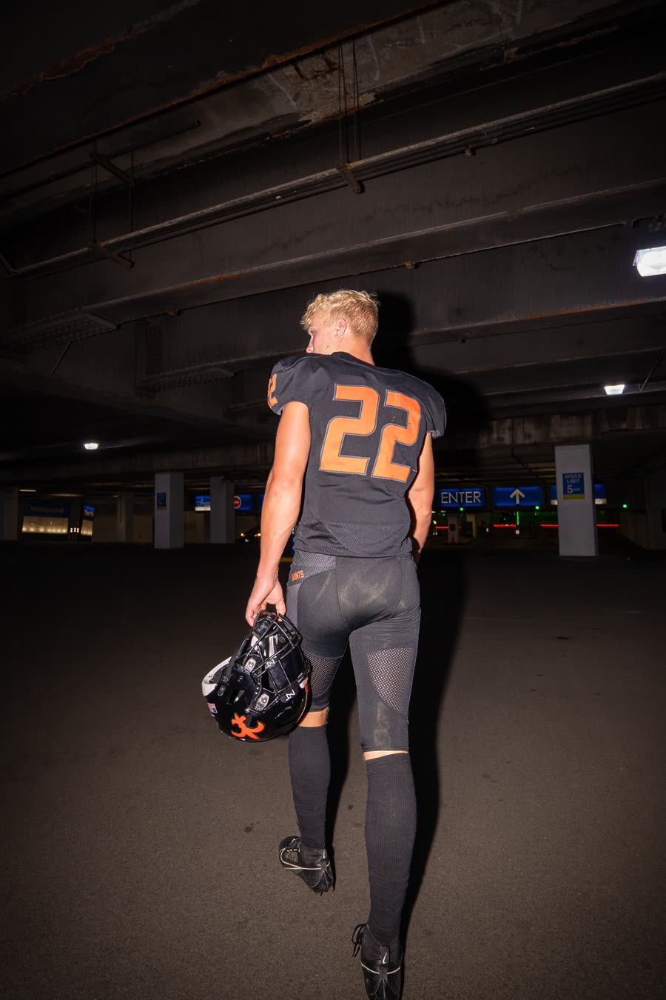
02 — Behind the Lens
Starting
something new.
Today, I'm a sports photographer who has covered games and media days for multiple high schools, filmed four-plus state championships, shot professional games with the Windy City Bulls, and worked collegiate sports with the NIU Huskies. Add in my own years as an athlete, and that's what sets my work apart.
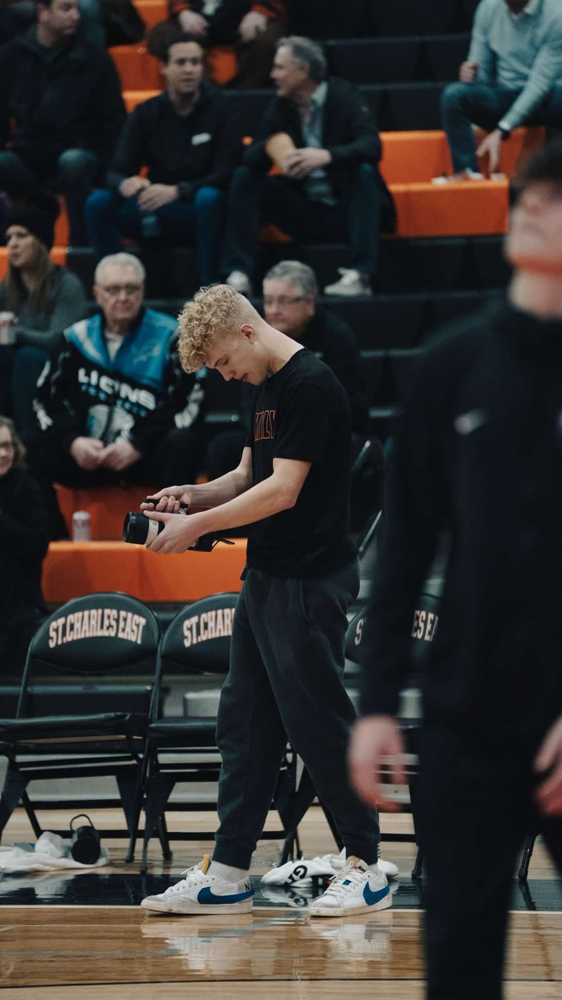
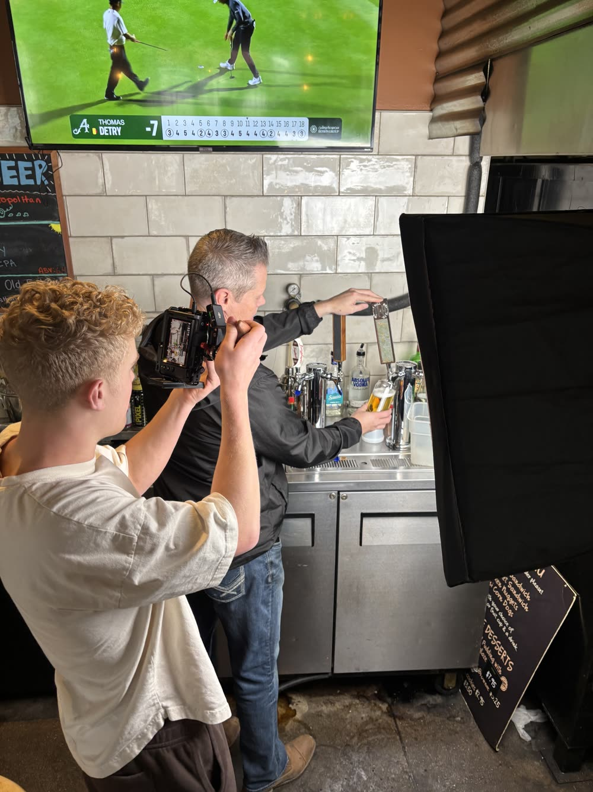
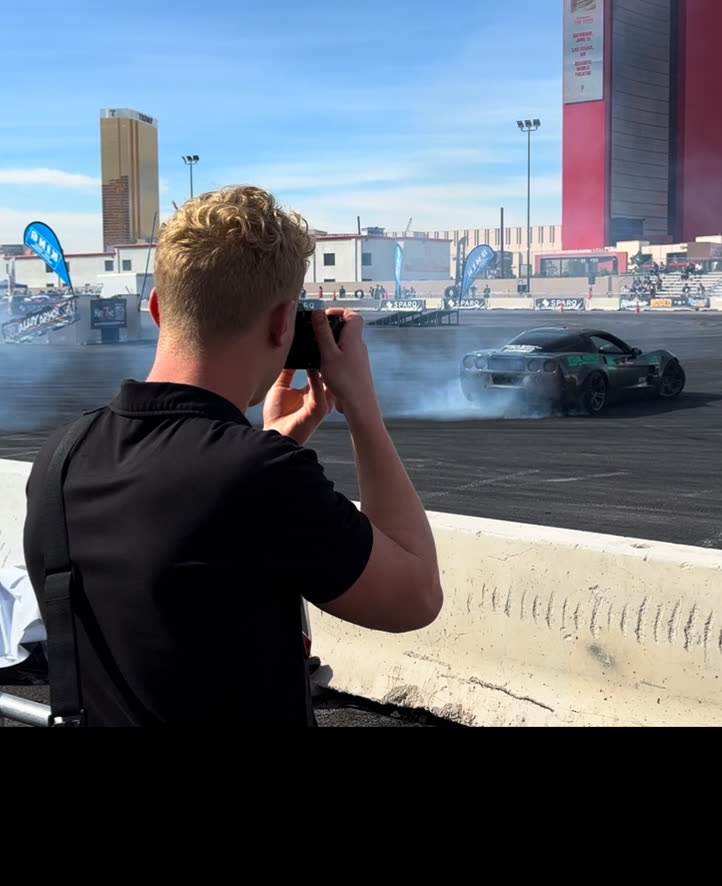
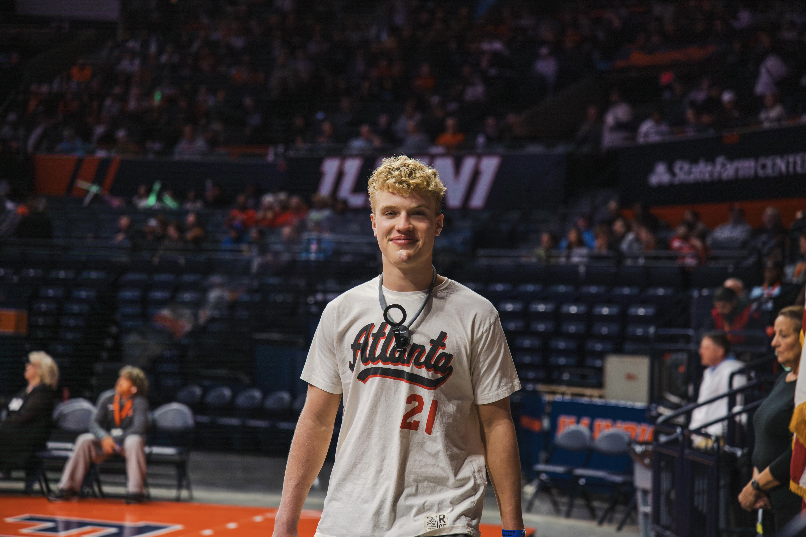
03 — GameTimeSnaps
Built a company
around it.
GAMETIMESNAPS is a sports media company covering portraits and event coverage. What started as a hobby my freshman year of high school has turned into a business, working with athletes and teams across my area. I've now partnered with 15+ clients.
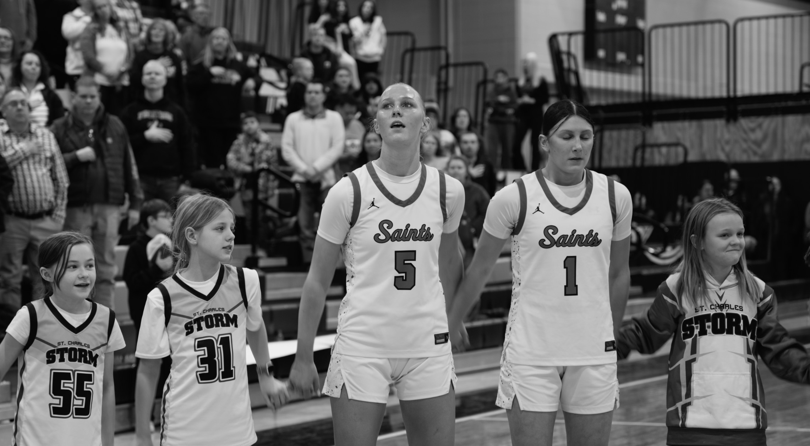
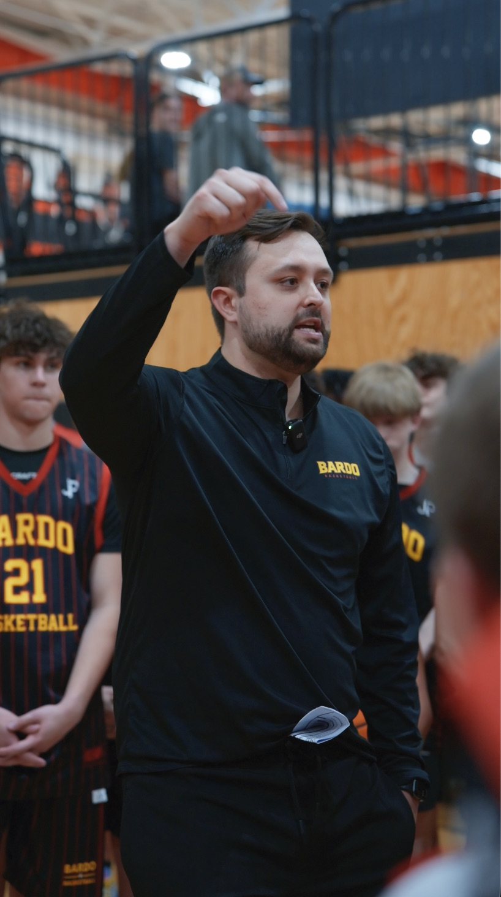
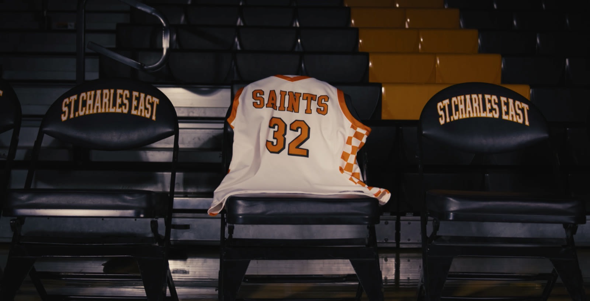
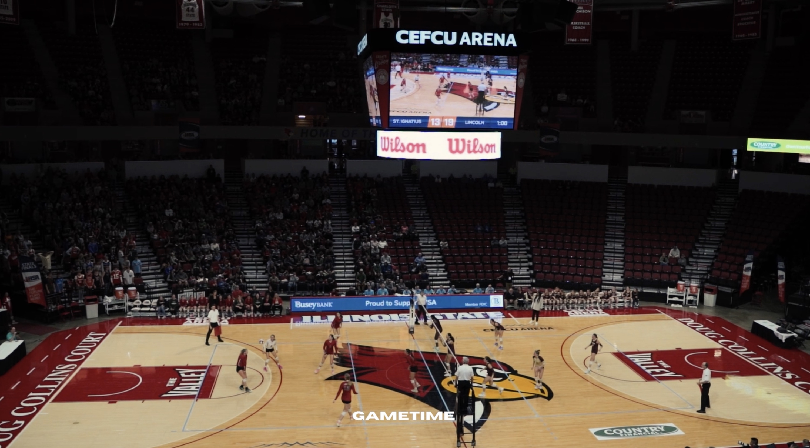
04 — The Future
Expanding into
the future.
Alongside GameTimeSnaps in the sports media space, I've also founded Big Dog Media LLC — a video marketing company that helps local businesses grow through social media and paid ads. I've worked with a variety of service-based businesses, helping them land more clients and increase revenue.
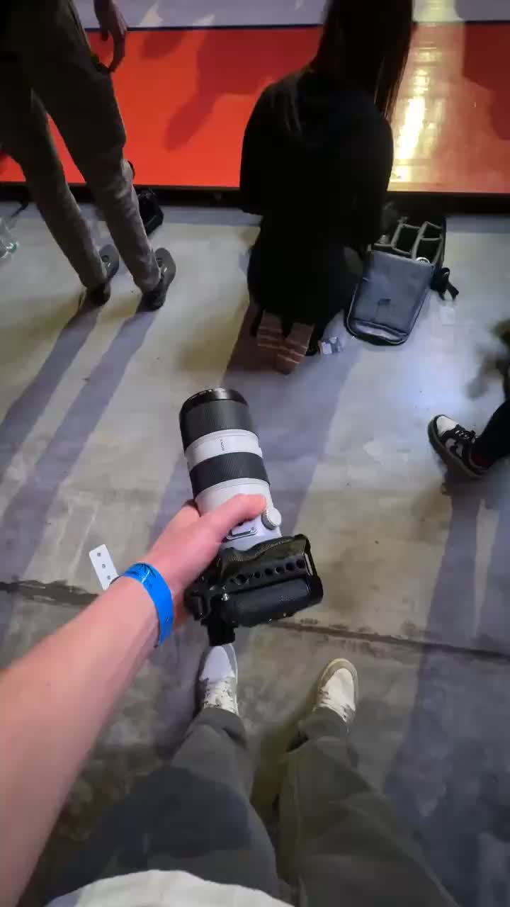
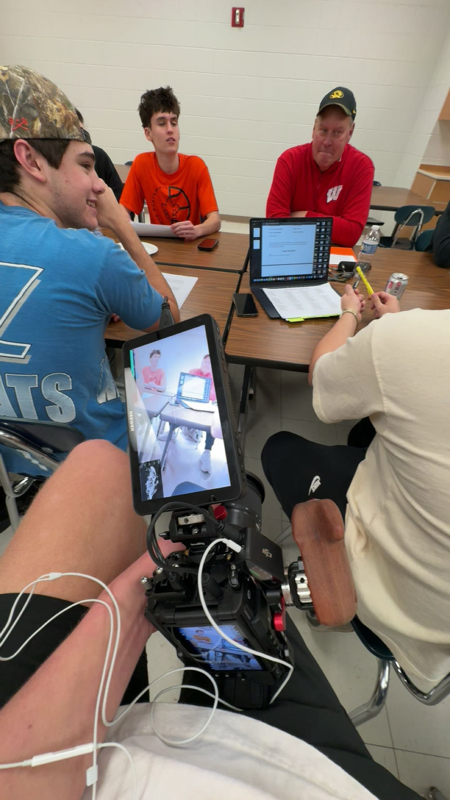
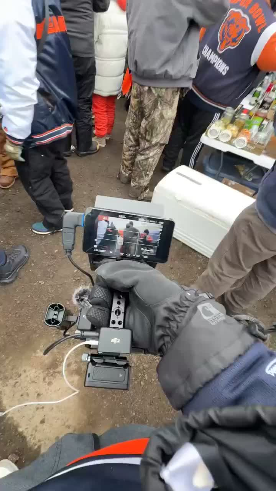
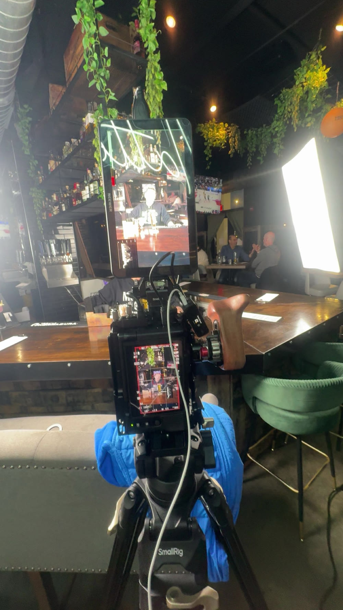
About
In short.
I'm Vincent Armato — an athlete-turned-photographer and videographer based in Chicago, Illinois. I'm the founder of GameTimeSnaps and Big Dog Media LLC.
Visit Big Dog Media LLCExperience
- Founded a video marketing company helping local businesses grow through social media and paid advertising.
- Partnered with service-based businesses to generate leads and increase revenue.
- Manage content strategy, ad campaigns, and client relations end to end.
- Founded and scaled a creative media company specializing in sports, portrait, and event coverage.
- Built the business from a hobby to profitability.
- Worked with 15+ local clients, managing client relations, marketing, and project execution.
- Create daily agendas for the marketing department.
- Develop and execute marketing campaigns to increase brand exposure.
- Manage social media presence and promotional strategy.
- Promoted to Honor Caddy within the first year based on performance and professionalism.
- Built strong relationships with members while enhancing the overall golf experience.
Recognition
Leadership
- Senior captain for both varsity football and basketball.
- Member of the football leadership council during junior and senior years.
- Selected to wear the Justin Hardy Memorial Jersey, honoring Justin's legacy and story.
- Worked one-on-one daily with a special needs student during PE classes.
- Created and led daily adaptive activities.
- Manage and mentor a Peer Leadership class of 28 students.
Education
- Weighted GPA 5.104 · Unweighted GPA 4.604
- SAT 1300
Contact
Let's build something worth watching.
Available for games, media days, championship coverage, and video production.